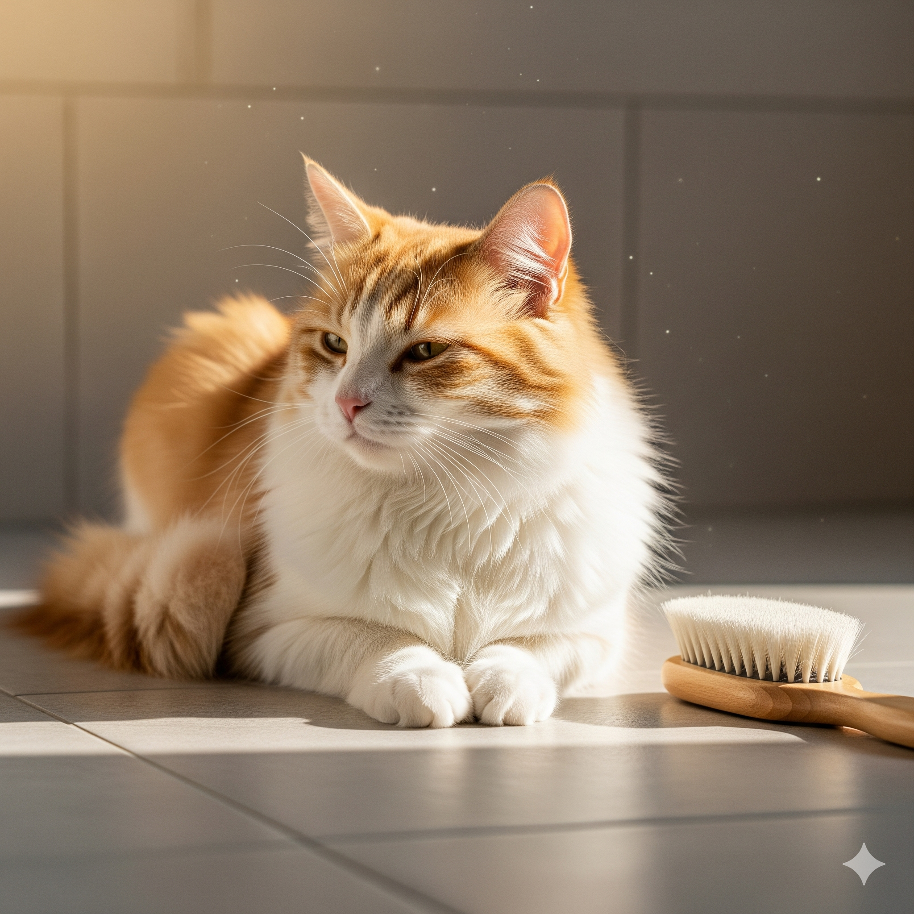

Banho em Gatos: Sim ou Não? Descubra a Verdade Sobre a Higiene Felina

Por Plantas & Gatos - Seu guia de confiança sobre cuidados e comportamento felino
🐱 Os Gatos São Mestres da Limpeza
Se você convive com um gato, já deve ter percebido o quanto ele se dedica aos próprios cuidados. Estudos mostram que os felinos passam até 5 horas por dia se lambendo. A língua deles tem pequenas estruturas chamadas papilas — minúsculos “ganchinhos” que funcionam como uma escova natural, removendo poeira, pelos soltos e distribuindo os óleos naturais da pele.
💡 Resultado: gatos são naturalmente limpos e não precisam de banhos constantes para manter o pelo bonito e saudável.
🚫 Por Que Banhos Frequentes Podem Ser um Problema
Além de desnecessários, banhos excessivos podem:
- Retirar a camada natural de gordura protetora da pele;
- Aumentar o estresse, pois a maioria dos gatos não gosta de água;
- Deixar o pelo ressecado e sem brilho.
Gatos são animais que prezam pelo controle do ambiente. Serem molhados, manipulados e expostos ao barulho da água pode ser extremamente desconfortável para eles.
✅ Quando o Banho É Realmente Necessário
Embora raros, existem momentos em que o banho é indicado:
- Quando o gato se suja com substâncias perigosas (tinta, óleo, produtos tóxicos);
- Por recomendação do veterinário, especialmente em casos de problemas de pele;
- Para gatos idosos ou doentes, que já não conseguem se limpar tão bem sozinhos;
- Antes de procedimentos médicos específicos (como cirurgias).
Em qualquer um desses casos, o ideal é que o banho seja feito por um profissional especializado, que saiba manejar o felino com segurança e utilizar produtos próprios para gatos.
Escovação: O Melhor “Banho” do Seu Gato
Se a sua preocupação é manter o pelo sempre limpo e saudável, a escovação é a chave! Com alguns minutos por dia, você consegue:
- Remover pelos mortos e evitar nós;
- Estimular a circulação sanguínea;
- Prevenir bolas de pelo (tricotilobezoares);
- Fortalecer o vínculo entre você e seu gato;
- Manter o pelo brilhante.
Dica: escolha uma escova adequada para o tipo de pelagem e transforme a escovação em um momento de carinho e relaxamento.
Na maioria das situações, o banho não é necessário para manter a higiene dos gatos. Eles são especialistas em autocuidado e a escovação diária já garante um pelo limpo, macio e brilhante.
Então, da próxima vez que alguém disser que “gato que não toma banho é sujo”, você já sabe: isso é mito! 😉
E você, já tentou dar banho no seu gato? Como foi a experiência? Conte nos comentários — sua história pode ajudar outros tutores a entender melhor o comportamento felino!
← Voltar para o blog